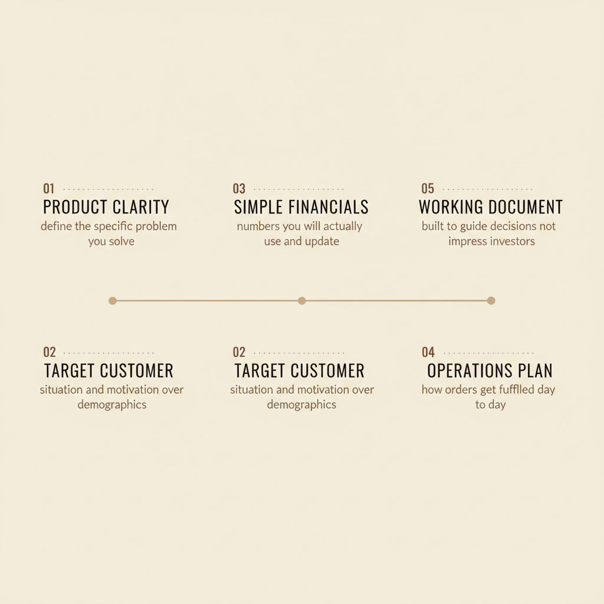

How to write an e commerce business plan that actually gets used

You have a product idea. Maybe you have already started sourcing inventory or sketching out your website. But every time you sit down to write a business plan, you stare at a blank document and wonder what you are even supposed to put in there.
Most e commerce business plan templates online read like they were written for people pitching venture capitalists. Twelve-page financial projections. Jargon-heavy market analysis. Executive summaries that sound like they belong in a boardroom.
If you are building an online store - whether you are selling physical products, digital downloads, or services - you do not need that. You need a clear, usable document that helps you make decisions and stay focused. Something you will actually open again after you write it.
This post breaks down what goes into an e commerce business plan that works for real small business owners. No fluff. No unnecessary sections. Just the parts that matter and how to write them without overcomplicating everything.
WHY MOST BUSINESS PLANS END UP IN A DRAWER
Here is the honest truth about business plans: most people write them once and never look at them again.
They spend hours filling out templates, copying and pasting market research they do not fully understand, and writing financial projections based on numbers they pulled out of thin air. Then they save the document, feel productive for a day, and never open it again.
The problem is not the concept of business planning. The problem is that most plans are built for the wrong audience. They are designed to impress investors or loan officers - not to help you run your actual business.
A useful e commerce business plan is a working document. It answers the questions that keep you up at night. It gives you something to check your decisions against. And it changes as your business changes.
If you are not planning to seek outside funding, you can skip half of what traditional templates include. Focus on the sections that will actually guide your work.
START WITH WHAT YOU ARE SELLING AND WHO WANTS IT
Before you write anything else, get clear on two things: what you sell and who you are selling it to.
This sounds obvious. But most business owners describe their products in vague terms that could apply to dozens of competitors. "High-quality handmade jewelry" or "premium digital templates" tells you nothing useful.
Instead, describe your product in terms of the specific problem it solves.
What does your customer have before they find you?
What do they have after?
What changes for them?
For your target customer, go beyond demographics. Age and location matter less than situation and motivation. A 28-year-old in Austin and a 45-year-old in London might both be your ideal customer if they share the same frustration and are actively looking for a solution.
Write this section like you are explaining your business to a friend who has never heard of it. If you cannot explain it clearly in a few sentences, you are not ready to move on.
HOW YOU WILL ACTUALLY MAKE MONEY
Your business model is not just "I sell things online." It is the specific mechanics of how money flows into your business.
Think through these questions and write down the answers:
- What is your average order value?
- How often does a typical customer buy from you - once, or repeatedly?
- What does it cost you to acquire a new customer through ads, content, or other channels?
- What are your margins after product costs, shipping, and platform fees?
If you sell digital products, your margins are probably high but your challenge is visibility. If you sell physical products, your margins might be tighter but repeat purchases could be more common.
Be honest about the numbers even if they are not exciting yet. A business plan that pretends everything is profitable from day one is useless. A plan that acknowledges where you need to improve gives you something to work toward.
YOUR COMPETITIVE EDGE - AND IT IS NOT "QUALITY"
Every business owner thinks their product is higher quality than the competition. That is not a competitive advantage. It is the baseline expectation.
Your real edge is the specific reason someone chooses you over every other option - including doing nothing at all.
Maybe you serve a niche that bigger competitors ignore. Maybe your customer service is genuinely exceptional. Maybe your brand resonates with a specific type of person in a way that generic competitors cannot match. Maybe you have built an audience that trusts you before they even see your products.
Look at your competitors honestly.
What do they do well?
Where do they fall short?
What are customers complaining about in their reviews?
Those complaints are opportunities.
Write down your competitive advantage in one or two sentences. If you cannot articulate it clearly, you probably do not have one yet - and that is a problem worth solving before you spend money on marketing.
HOW PEOPLE WILL FIND YOU
This is where most e commerce business plans get vague. "We will use social media and SEO" is not a marketing plan. It is a wish.
A real marketing section answers specific questions:
- Which platforms will you focus on and why?
- What type of content will you create?
- How will you drive traffic to your website in the first 90 days?
- What will you do to turn first-time visitors into buyers?
You do not need to be everywhere. In fact, trying to be everywhere usually means you are mediocre at all of it. Pick one or two channels where your target customer actually spends time and go deep.
If you sell visual products, Pinterest and Instagram make sense. If you sell to other businesses, LinkedIn or email might be better. If your product solves a problem people actively search for, SEO and content marketing could be your primary channel.
Also think about your email list. Social media reach is unpredictable. Algorithms change. Accounts get restricted. Your email list is the only audience you actually own. Even 200 engaged subscribers will drive more results than thousands of passive social followers.
If you want a done-for-you starting point, the Switzertemplates 3-in-1 bundle includes a full branding kit, a Wix website, and a Canva landing page - so you can look professional from day one and focus on actually selling instead of building everything from scratch.
THE MONEY PART - KEEP IT SIMPLE
Financial projections scare people. They picture complex spreadsheets and accounting terms they do not understand.
If you are not seeking investors, your financial section can be straightforward. Focus on three things:
- Startup costs
- Monthly expenses
- Revenue targets
Startup costs are everything you need to spend before you make your first sale. Website platform fees. Initial inventory. Branding and design. Photography. Any software or tools you need to run the business.
Monthly expenses are the recurring costs you will pay whether you sell anything or not. Hosting. Subscriptions. Any ongoing advertising budget. If you have physical products, factor in storage or fulfillment costs.
Revenue targets are not predictions - they are goals.
How much do you need to sell each month to cover your expenses?
How much to actually pay yourself?
Work backward from those numbers to figure out how many orders you need at your average price point.
Keep your projections conservative for the first year. Optimism feels good but it does not pay bills. Plan for slower growth than you hope for, and you will be prepared if it happens - and pleasantly surprised if it does not.
WHAT YOU WILL DO IN THE FIRST 90 DAYS
A business plan without action steps is just an essay. End your plan with a concrete list of what you will actually do in the next three months.
Break it down by priority:
- What needs to happen before you can launch?
- What can wait until you have some sales coming in?
- What is nice to have but not essential?
Be specific. "Set up social media" is not an action step. "Create Instagram business account, post 3 times per week, engage with 10 potential customers daily" is an action step you can actually follow.
Put dates on things. Not because you will hit every deadline perfectly - you will not - but because deadlines create momentum. A task without a date is just a vague intention.
Review your 90-day plan at the end of each month.
What did you finish?
What is taking longer than expected?
What turned out to be less important than you thought?
Adjust and keep moving.
KEEP IT ALIVE
The best e commerce business plan is not the longest or the most polished. It is the one you actually use.
Print it out. Put it somewhere you will see it. Open it before you make big decisions and ask yourself if this choice aligns with what you wrote down.
Update it when things change - and things will change. Your target customer might shift. A marketing channel might stop working. A new competitor might enter your space. Your plan should evolve with your business, not sit frozen in the state you wrote it.
An e commerce business plan is not a document you write to prove you are serious. It is a tool that keeps you focused when everything feels chaotic. Write it for yourself, not for an imaginary investor. Make it useful, and you will actually use it.
Ready to build a business that looks as professional as it is? 📥 Browse the full collection of Canva templates, Wix websites, and branding kits at the Switzertemplates Etsy shop - designed specifically for coaches, consultants, and service providers who want to attract the right clients.
Let me know in the comments below if you want me to cover any branding or marketing topics in more depth, and I'll make sure to create a blog post about it in the future.